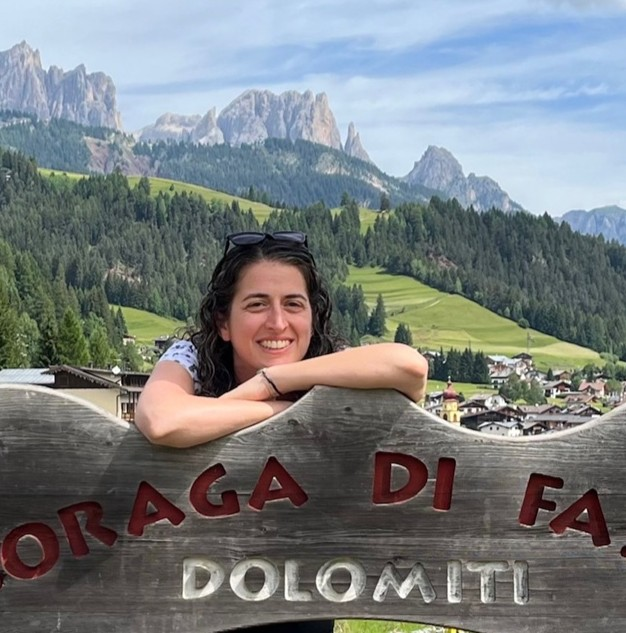
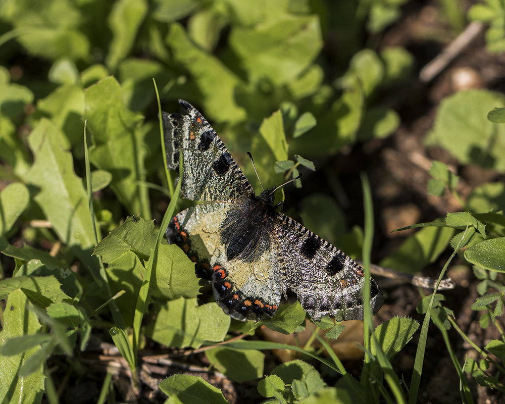
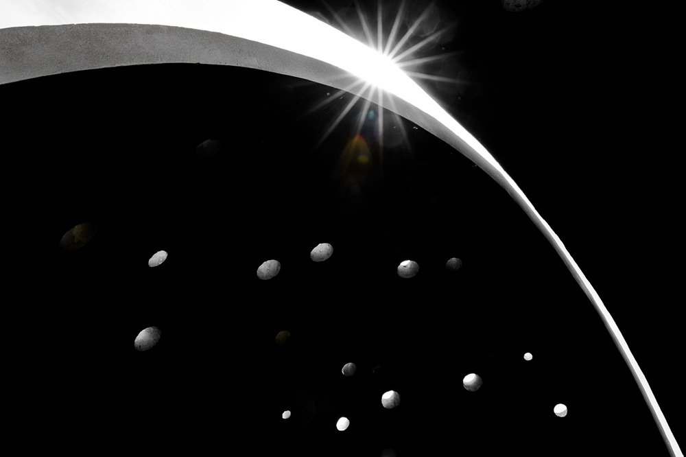
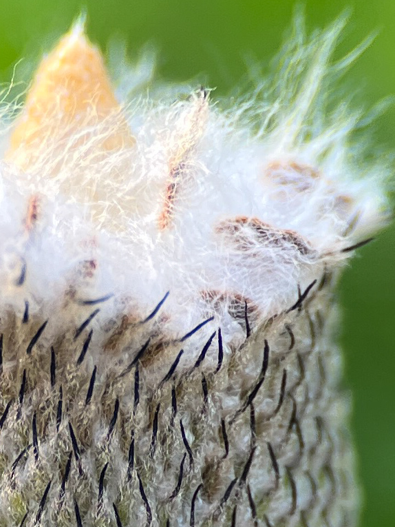
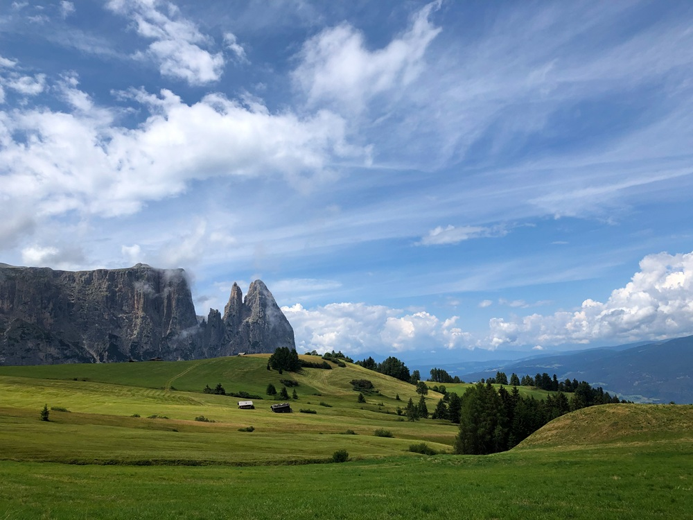
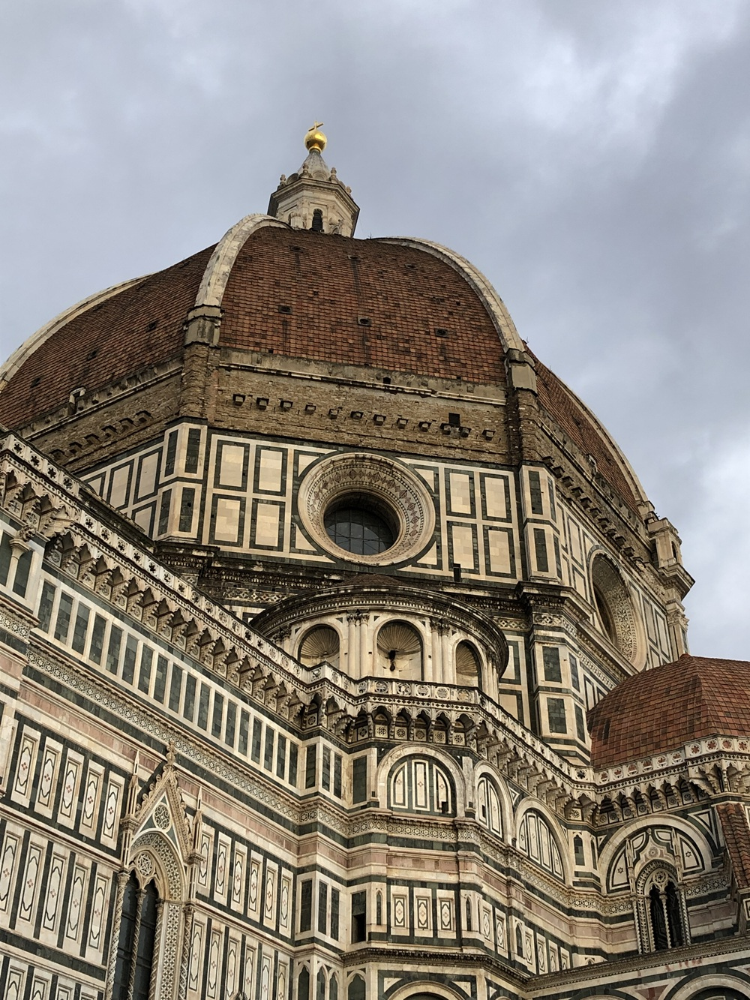
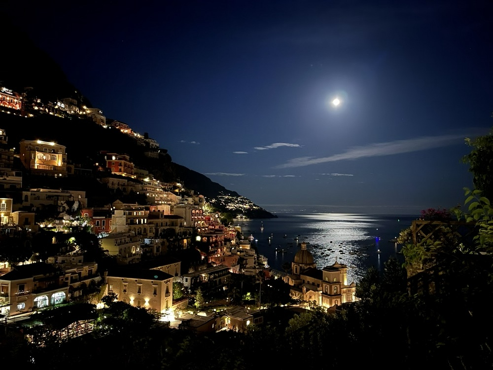
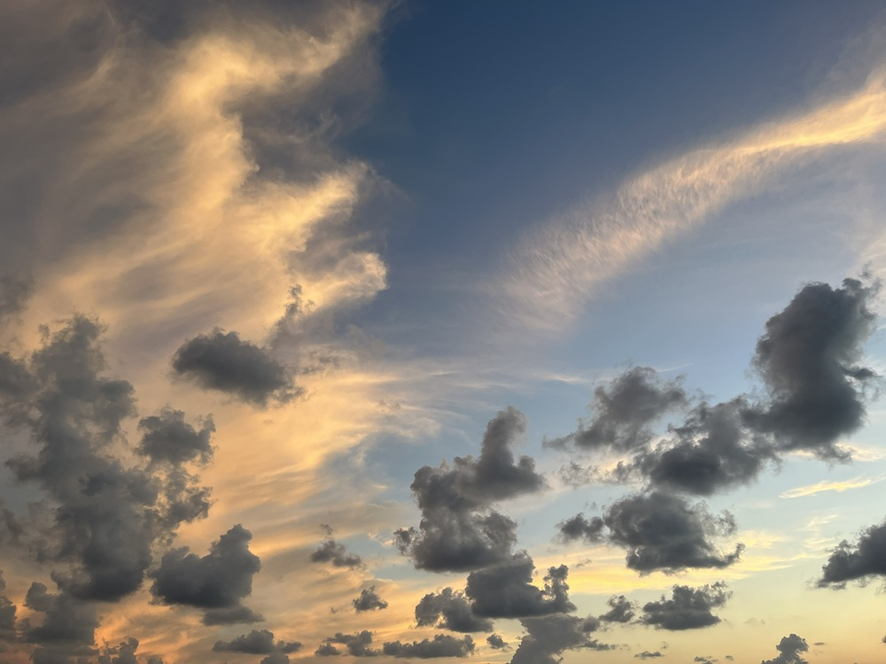
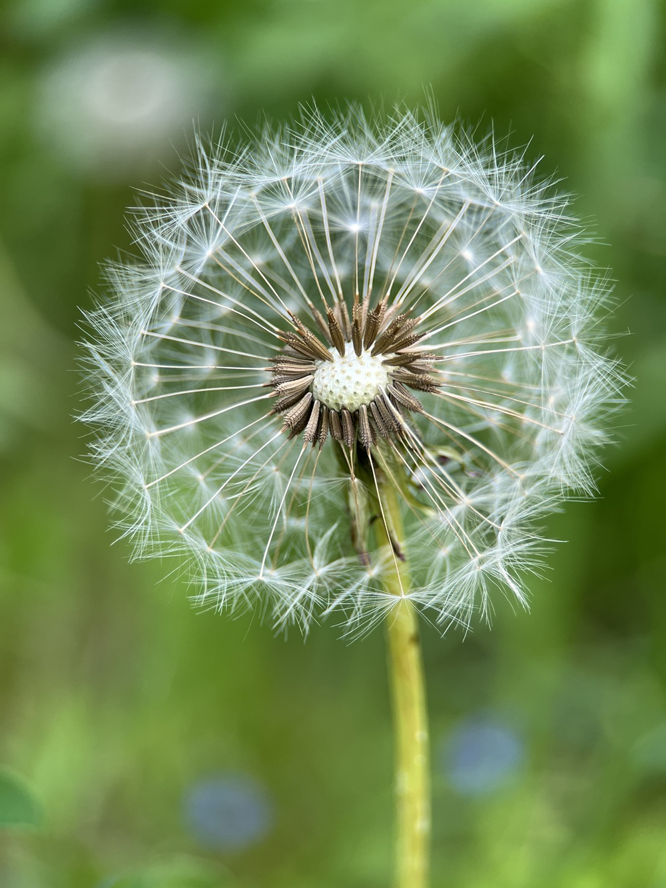

Hi, welcome to my page!
I'm passionate about exploring nature, discovering new places, and capturing the world around me through my lens.
This site is a small collection of the things that inspire me every day.
Photography allows me to capture the beauty of the world from different perspectives.
Through landscape photography, I enjoy freezing the grandeur of nature, open spaces, and vibrant horizons.
Macro photography lets me zoom in on the smallest details that often go unnoticed, like the delicate textures of a flower.
Additionally, I love black and white photography, as it brings out unique atmosphere and plays with light and shadow.
Ultimately, for me, every photograph tells a story.



Italy is a breathtaking country with incredible diversity from north to south.
In the north, you can find the dramatic nature of the majestic Dolomites, perfect for mountain landscapes and outdoor exploration.
Heading down south, the country opens up to gorgeous coastlines, crystal-clear waters, and a vibrant coastal atmosphere.
Combined with its rich history, art, and delicious cuisine, every region offers a unique story.



Nature is a constant source of inspiration, offering endless beauty and quiet moments.
Whether it is the vast green landscapes, blooming flowers, or the subtle details of light and shadow, exploring nature allows us to disconnect and reconnect with the world around us.
"Nature is the source of all true knowledge." — Leonardo da Vinci

